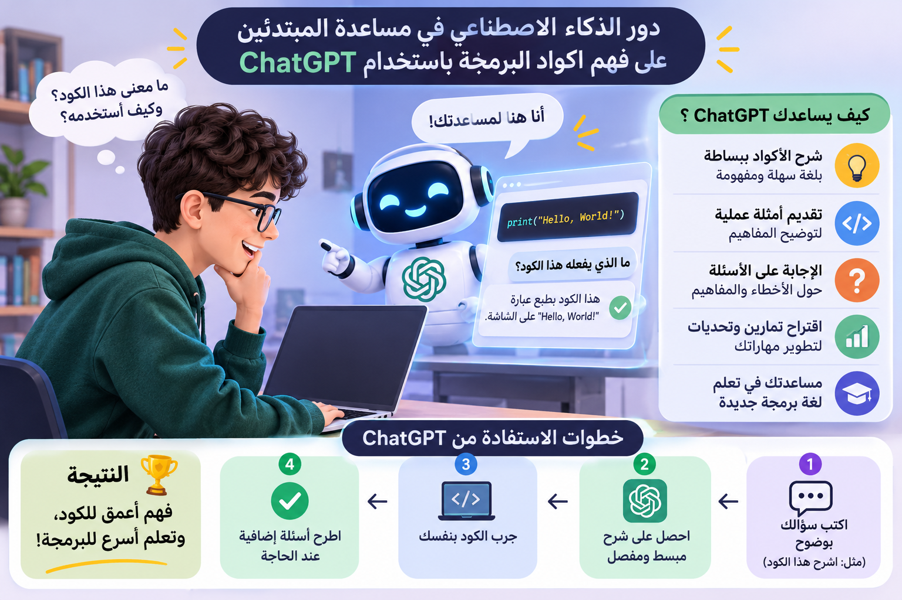

اسم الطالبة: Nada Reyad Suleiman Al-Anani Abdullah
الرقم الجامعي: 2500641
الفرقة: الثانية - نظم ومعلومات
يشهد العالم تطورًا كبيرًا في مجال التكنولوجيا، وأصبح الذكاء الاصطناعي من المجالات المهمة التي نستخدمها في حياتنا اليومية فقد ظهرت أدوات حديثة تساعد الانسان على الحصول على المعلومات وفهم الموضوعات المختلفة بسهولة، ومن أهم هذه الادوات ChatGPT . وتُعد البرمجة من المهارات المهمة في وقتنا الحالي، حيث تُستخدم في تصميم المواقع الالكترونية، وإنشاء التطبيقات والالعاب، وتطوير البرامج المختلفة ولكن قد يجد المبتدئون صعوبة في تعلم البرمجة، خاصة عند فهم الاكواد ومعرفة وظيفة كل أمر فيها، أثناء كتابة البرامج. أو عند مواجهة الاخطاء ، حيث يمكن استخدامه في شرح الاكواد البرمجية بطريقة ChatGPT وهنا يأتي دور بسيطة، وتقديم أمثلة تساعد على الفهم، وتوضيح الاخطاء وكيفية إصالحها لذلك أصبح من الممكن الاستفادة منه كوسيلة مساعدة في تعلم البرمجة، بشرط أن يستخدمه الطالب بطريقة صحيحة والا يعتمد عليه اعتمادًا كامال ً . يواجه كثير من المبتدئين صعوبة في فهم أكواد البرمجة، بسبب وجود أوامر ومصطلحات جديدة عليهم لذلك يتحدث هذا البحث عن دور ChatGpt في تسهيل فهم الاكواد ومساعدة المبتدئين علي تعلم اساسيات البرمجة
الذكاء االصطناعي هو أحد مجالات علوم الحاسوب، ويهدف إلى تطوير أنظمة تستطيع القيام ببعض المهام التي تحتاج إلى التفكير والفهم، مثل تحليل المعلومات، وفهم اللغة، والاجابة عن األسئلة، والمساعدة في حل المشكلات ويُستخدم الذكاء الاصطناعي في مجالات كثيرة، مثل التعليم والطب والصناعة والبرمجة وفي مجال التعليم، يساعد الطالب على فهم المعلومات ومراجعة الدروس والتدرب على المهارات الجديدة
هو اداة تعتمد علي الذكاء الاصطناعي ويمكن للمستخدم التحث معها وطرح الاسئلة عليها للحصول علي اجابات وطرق شرح مختلفة ويمكن استخدام ChatGpt في تعلم البرمجة حيث يساعد علي شرح الاكواد وتوضيح معني الاوامر وتقديم امثلة عملية والمساعدة في معرفة اسباب الاخطاء التي تظهر اثناء كتابة البرامج كما يمكن للطالب ان يطلب منه اعادة شرح المعلومة بطريقة ابسط اذا لم يفهمهالا من المرة الاولي
الكود البرمجي هو مجموعة من الاوامر التي يكتبها المبرمج حتى ينفذ الحاسوب مهمة معينة ولكي يتعلم الطالب البرمجة بشكل صحيح، يجب أن يفهم معنى هذه الاوامر وطريقة ، وليس مجرد نسخها واستخدامها. كتابتها فعلى سبيل المثال، يحتاج المبتدئ إلى معرفة كيفية استخدام المتغيرات والشروط والحلقات التكرارية، وهي من الاساسيات المهمة في البرمجة. من اللغات المناسبة للمبتدئين، لانها تتميز بكتابة واضحة نسبيًا، كما Python وتُعد لغة تتوافر لها مصادر رسمية تشرح أساسياتها بطريقة منظمة.
من اهم فوائد ChatGpt انه يستطيع شرح الاكواد البرمجية بطريقة بسيطة وتوضيع وظيفة كل سطر فيها
Hello Ahmed
قد يجد المبتدئ صعوبة في فهم بعض الاوامر، مثل الشروط التي تجعل البرنامج ينفذ نتيجة محددة. امرًا معينًا شرح هذه الاوامر من خلال أمثلة بسيطة. ChatGPT ويمكن
عند تعلم البرمجة قد يكتب الطالب الكود بطريقة غير صحيحة او ينسي احد الرموز مما يؤدي الي ظهور خطأ عند تشغيل البرنامج ويمكن استخدام ChatGpt لمعرفة سبب الخطأ وكيفية اصلاحه
"print("Hello يوجد خطأ في هذا الكود لان قوس الاغلاق غير موجود
print("Hello") يساعد هذا المثال الطالب علي معرفة اهمية كتابة الاوامر والرموز بطريقة صحيحة
يساعد ChatGpt الطالب علي فهم المعلومات بطريقة تناسب مستواه فاذا لم يفهم شرحا معينا يمكنه طلب شرح ابسط او امثلة اضافية وهذا يجعل تعلم البرمجة اكثر سهولة خاصة بالنسبة للطالب الذي يبدأ من الصفر
تحتاج البرمجة الي التفكير بطريقة منظمة للوصول الي الحل الصحيح ويمكن لChatGpt مساعدة الطالب علي تقسيم المشكلة الي خطوات صغيرة وفهم الطرق المختلفة لحلها ويكون التعلم افضل عندما يحاول الطالب حل المشكلة بنفسه اولا ثم يستعين بالاداة لمراجعة اجابته وفهم اخطائه
علي الرغم من فوائده فإن استخدام ChatGpt لع بعض العيوب فقد يقدم احيانا معلومات غير صحيحه او يكتب كودا يحتوي علي اخطاء لذلك يجب التأكد من صحة الاجابات قبل الاعتماد عليها كذلك قد يواجه الطالب مشكلة اذا اعتاد نسخ الاكواد الجاهزة دون فهمها لان ذلك قد يجعله غير قادر علي كتابة البرامج بنفسه

| المميزات | الفائدة |
|---|---|
| شرح الاكواد | فهم الاوامر البرمجية |
| تقديم امثلة | تسهيل تعلم البرمجة |
في نهاية هذا البحث، يتضح أن الذكاء الاصطناعي أصبح وسيلة مهمة يمكن الاستفادة من الادوات التي تساعد المبتدئين على فهم ChatGPT منها في تعلم البرمجة. ويُعد الاكواد، وشرح الاوامر البرمجية، ومعرفة أسباب الاخطاء، والتدرب على حل المشكلات. كما يساعد على تقديم المعلومات بطريقة بسيطة، مما يجعل تعلم البرمجة أسهل بالنسبة للطلاب الذين ليست لديهم خبرة سابقة. ولكن يجب استخدام هذه الاداة بطريقة صحيحة، لان الاعتماد على الاكواد الجاهزة دون فهمها لا يساعد على اكتساب المهارات المطلوبة. لذلك من الافضل الجمع بين استخدام ChatGPT .والتدريب العملي والرجوع إلى الكتب والمصادر الموثوقة أداة مساعدة مفيدة في تعلم البرمجة، لكنه لا يغني عن التفكير والممارسة والتعلم المستمر